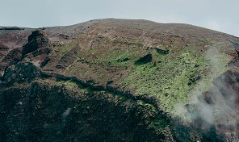
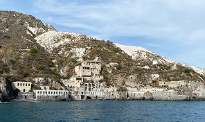

Cosa si protegge
La natura» da proteggere non è una cosa sola. Cambia da un'isola all'altra: un vulcano, una tartaruga, una vite. Questa pagina mette le sei isole a confronto per mostrare che cosa custodisce, in ciascuna, la tutela.
Cosa custodisce ogni isola
-

Foto: autore e licenza. Tartaruga Caretta caretta e balenottere
-

Foto: autore e licenza. Fumarole sulfuree e geotermia
-

Foto: autore e licenza. Ecosistemi vulcanici pionieri
-

Foto: autore e licenza. Macchia mediterranea e cave storiche
-
Foto: autore e licenza. Vite ad alberello e foreste di pini
-
Foto: autore e licenza. Boschi di castagno e falco della regina